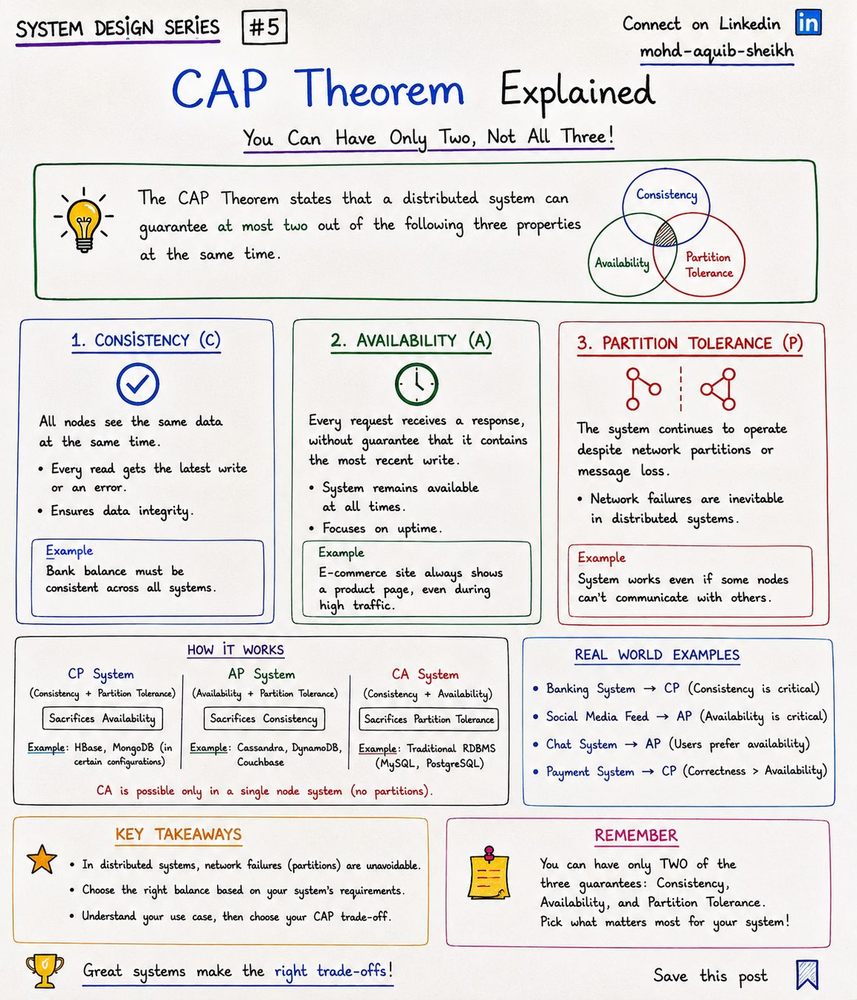
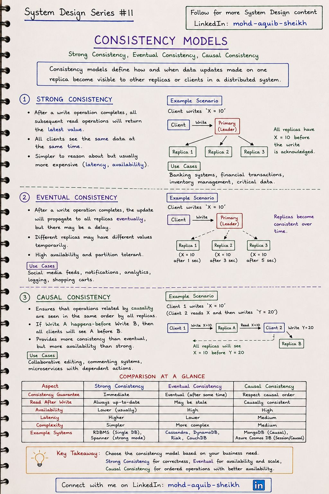

CAP и модели согласованности
Как только данные лежат больше чем на одном узле, появляется вопрос: что увидит клиент, если узлы временно разошлись? CAP объясняет, от чего придётся отказаться при разрыве сети, а модели согласованности — какие именно гарантии можно обещать.
2.1CAP-теорема#5
Распределённая система не может одновременно гарантировать все три свойства: Consistency — каждый узел возвращает самые свежие данные, Availability — каждый запрос получает ответ (не ошибку), Partition tolerance — система работает, несмотря на потерю связи между узлами.


| Выбор | При разрыве сети | Когда нужен | Примеры |
|---|---|---|---|
| CP | Узлы, не уверенные в свежести данных, отказывают в обслуживании | Ошибка дешевле неверных данных: баланс, платёж, остаток на складе, блокировки | etcd, ZooKeeper, HBase, MongoDB с majority |
| AP | Каждый узел отвечает тем, что у него есть; расхождения устраняются позже | Устаревшие данные дешевле отказа: лента, лайки, корзина, каталог | Cassandra, DynamoDB, Riak |
- От P отказаться нельзя. Сеть рвётся независимо от вашего желания, поэтому реальный выбор — между C и A в момент разрыва. Пока сеть цела, система может быть и согласованной, и доступной.
- «CA-система» — это один узел. Конспект верно отмечает: CA возможна только без разделений. Одиночный PostgreSQL формально CA, но как только у него появляется реплика с автоматическим переключением, он становится распределённой системой и должен выбирать.
- Одна и та же БД бывает и CP, и AP — зависит от настроек. MongoDB с
w: majorityведёт себя как CP, сw: 1и чтением с реплик — отдаёт устаревшее. В Cassandra уровень согласованности задаётся на каждый запрос. - C в CAP ≠ C в ACID. В CAP это линеаризуемость (все видят одно значение), в ACID — соблюдение инвариантов данных (тема 07).
2.2Модели согласованности#11
Модель согласованности определяет, как и когда запись, сделанная на одной реплике, становится видна остальным репликам и клиентам. Это шкала от «все всегда видят одно и то же» до «когда-нибудь сойдётся».


| Strong (строгая) | Causal (причинная) | Eventual (в конечном счёте) | |
|---|---|---|---|
| Гарантия | После завершения записи любое чтение возвращает новое значение | Причинно связанные операции все видят в одном порядке | Если записи прекратятся, реплики когда-нибудь сойдутся |
| Чтение после записи | Всегда свежее | Согласовано по причинности | Может быть устаревшим |
| Доступность | Ниже | Высокая | Высокая |
| Задержка | Выше | Средняя | Ниже |
| Где | Банк, склад, финансовые операции | Совместное редактирование, комментарии, зависимые действия сервисов | Лента, уведомления, аналитика, логи |
| Системы | Одиночная РСУБД, Spanner, etcd | MongoDB (causal sessions), Cosmos DB (session) | Cassandra, DynamoDB, Riak |
Сессионные гарантии — то, что нужно на практике
Между строгой и «когда-нибудь» есть несколько гарантий, которых обычно достаточно пользователю и которые гораздо дешевле линеаризуемости:
- Read-your-writes — пользователь всегда видит собственные изменения. Классическая ошибка: обновили профиль на primary, следующий GET ушёл на отстающую реплику — и показал старые данные. Лечится чтением с primary некоторое время после записи или привязкой сессии к реплике, догнавшей нужную позицию.
- Monotonic reads — время не идёт назад: увидев новое значение, клиент не получит более старое при следующем чтении (бывает, когда запросы попадают на реплики с разным отставанием).
- Causal — ответ не появляется раньше вопроса: если B зависит от A, никто не увидит B без A.
- Строгая согласованность не обязательно означает «все реплики получили запись до подтверждения», как на рисунке. Достаточно кворума: запись подтверждает большинство узлов, чтение тоже опрашивает большинство — пересечение гарантирует свежее значение (условие
W + R > N, см. тему 08). - Eventual consistency ничего не говорит о том, какое значение победит при одновременных записях в разные реплики. Нужна стратегия разрешения конфликтов: last-write-wins по времени (просто, но теряет записи), версионные векторы, CRDT — структуры данных, которые сливаются без конфликтов.
2.3Интерактив: разрыв сети и выбор между C и A
2.4Самопроверка
Что на самом деле утверждает CAP-теорема?
- Можно выбрать любые два свойства из трёх навсегда
- Распределённые системы не бывают согласованными
- При сетевом разделе система должна выбрать: отвечать (возможно, несогласованно) или отказывать в обслуживании ради согласованности
- Доступность важнее согласованности
Пользователь сменил аватар, обновил страницу и увидел старый. Какая гарантия нарушена?
- Линеаризуемость всей системы
- Read-your-writes: чтение ушло на отставшую реплику
- Долговечность
- Изоляция транзакций
Для каких данных уместна согласованность в конечном счёте?
- Счётчик лайков, лента, рекомендации, каталог
- Баланс счёта при списании
- Остаток последнего товара на складе
- Уникальность логина при регистрации
Почему говорят, что в CAP на самом деле выбирают между C и A, а не «любые два из трёх»?
Разделение сети — не свойство, от которого можно отказаться, а событие, которое происходит. Система, не рассчитанная на него, просто поведёт себя непредсказуемо. Поэтому вопрос один: когда узлы не могут связаться, отказывать в обслуживании (CP) или отвечать возможно устаревшими данными (AP).
Сервис бронирования мест в кинотеатре: CP или AP?
Для самой операции бронирования — CP: два человека на одном месте хуже, чем сообщение «попробуйте позже». А вот афиша, описания фильмов и даже примерная схема занятости зала могут быть AP и отдаваться из кэша. Выбор делается не для системы целиком, а для каждой операции.
Пользователь сменил аватар и после обновления страницы видит старый. Какая гарантия нарушена и как исправить?
Read-your-writes. Запись ушла на primary, чтение — на реплику, которая ещё не получила изменение (или в кэш со старым значением). Варианты: читать «свои» данные с primary в течение короткого окна после записи; передавать клиенту позицию записи и ждать, пока реплика её достигнет; инвалидировать кэш при записи.
Что добавляет PACELC к CAP?
Компромисс при нормальной работе: задержка против согласованности. Даже без аварий синхронная репликация замедляет каждую запись, а асинхронная создаёт окно несогласованности. Например, DynamoDB и Cassandra — PA/EL (доступность и низкая задержка), традиционные кворумные системы — PC/EC.